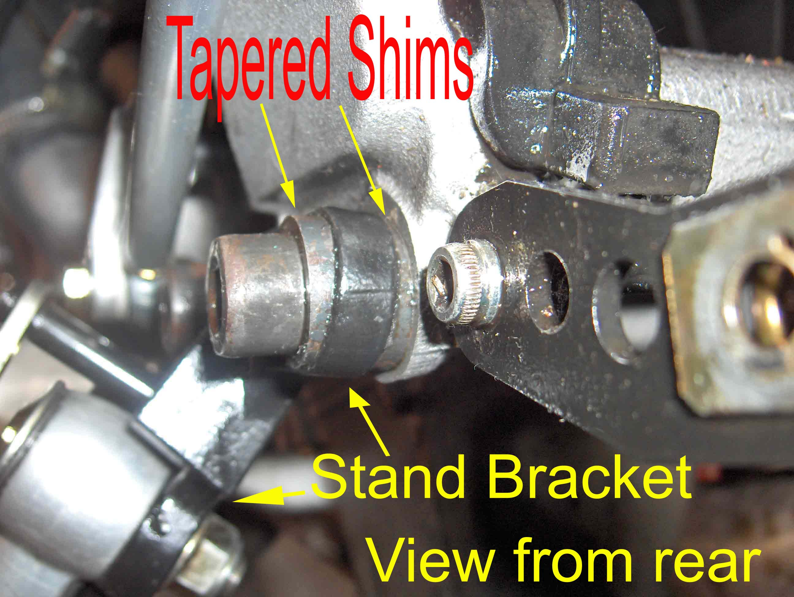
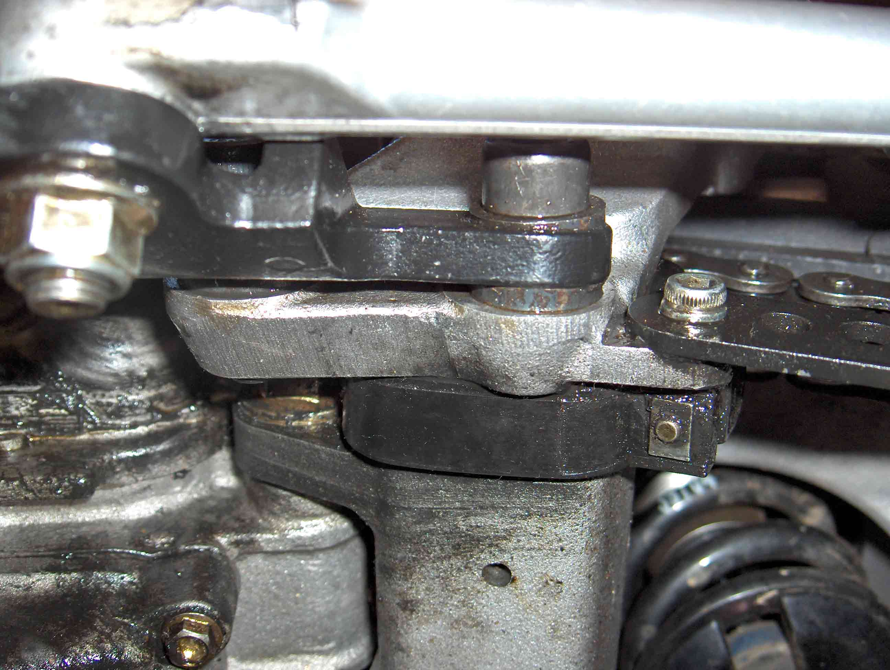

Side Stand Angle Modification
circa May 2005
If you are shorter than 5'8", you will probably have some difficulty reaching the ground with the balls of
your feet. The solution to that problem is to drop the forks through the triple-clamp 10 mm, and wind
down the rear pre-load by the same amount. This is fine for light blokes like me, but results in the bike
standing very upright on the side stand, and you'll be constantly scanning the terrain for safe ground.
The following solution was suggested by some kind soul on the Benelliforum. Use tapered shims to put
some more angle on the stand. 5° worked for me, but you may need to experiment a little.

From the rear, 2 shims can be seen on each side of the side stand bracket.

From below, 3 of the 4 shims can be seen. The 4th is obscured by the bracket
It's a bit of a fiddle getting them lined up properly, but you only need to do it once. It's wise to
check it once in a while, just in case you didn't quite get it right. In which case they will naturally
move to the correct position. Of course, if you don't check it, it'll all go pear shaped when the side
stand falls off completely.